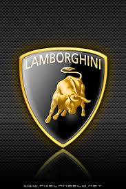

Automobili
Lamborghini Holding S.p.A., es un fabricante italiano de automóviles deportivos fundado en 1963 por el fabricante de tractores Ferruccio Lamborghini y que actualmente pertenece a la filial de Volkswagen, Audi. Alguno de los nombres de sus automóviles hacen referencia a nombres de toros bravos de lidia indultados (Murciélago), famosos o históricos (Diablo, Aventador), o simplemente palabras relacionadas con la tauromaquia (Miura, Espada, Urraco). Ferruccio se instaló en Sant'Agata Bolognese, en Bolonia, a pocos kilómetros de Maranello, para rivalizar con su vecino Enzo Ferrari, a raíz de una discusión por la calidad de sus coches. La empresa original se llamaba Automobili Ferruccio
Lamborghini SpA, que derivaba a su vez de Lamborghinila
Lamborghini Trattori S.A. Desde los primero años Aventador y Huracán, los
Lamborghini siempre se han destacado por sus automóviles y diseños exóticos.

Nuestros Modelos mas conocidos:
- Lamborghini Aventador.
- Lamborghini Diablo.
- Lamborghini Huracan.